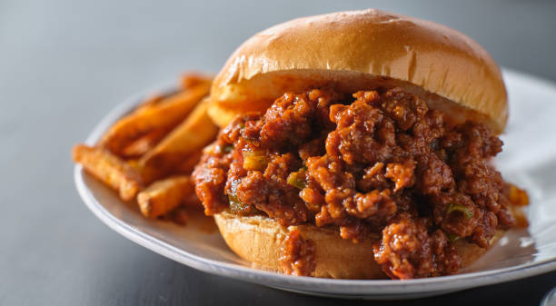

Sloppy Joes

Description
These crowd-pleasing Sloppy Joe sandwiches will take you back to your childhood!
This is my mom's recipe and it always gets compliments!
Ingredients
- 1 pound lean ground beef
- ¼ cup chopped onion
- ¼ cup chopped green bell pepper
- ¾ cup ketchup, or to taste
- 1 tablespoon brown sugar, or to taste
- 1 teaspoon yellow mustard, or to taste
- ½ teaspoon garlic powder
- salt and ground black pepper to taste
- 6 hamburger buns, split
Steps
- Cook beef in a skillet.
- Add onion and pepper.
- Cook until beef is cooked through.
- Stir in ketchup, brown sugar, mustard and garlic powder.
- Season with salt and pepper.
- Simmer for another 20 to 30 minutes.
- Divide mixture evenly among hamburger buns.